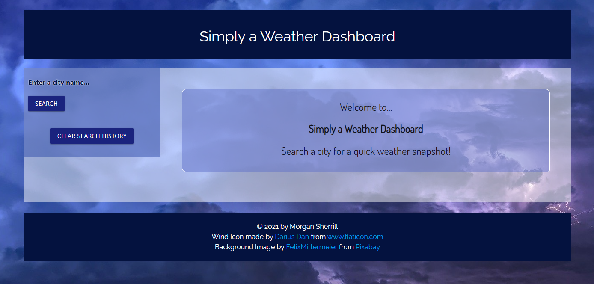
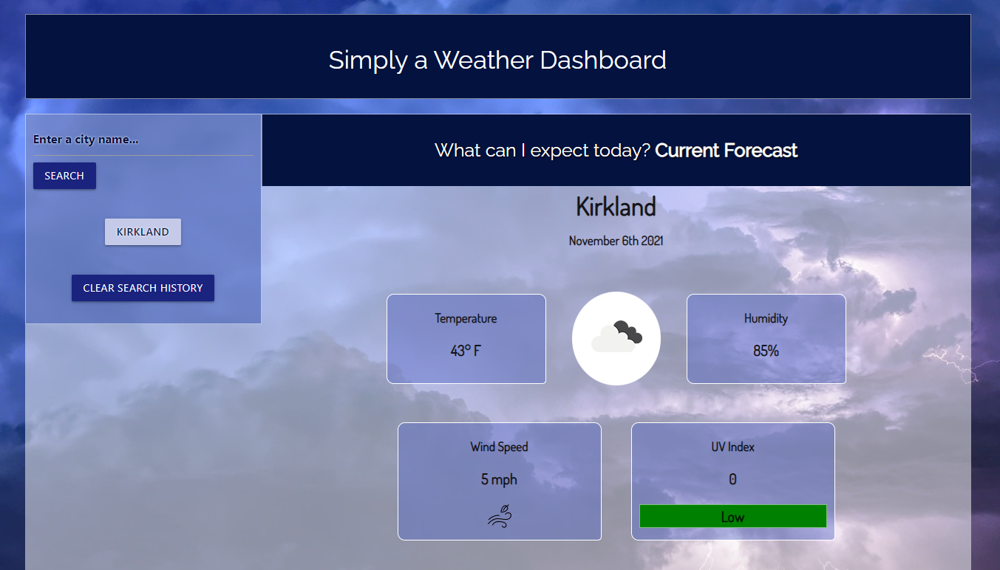
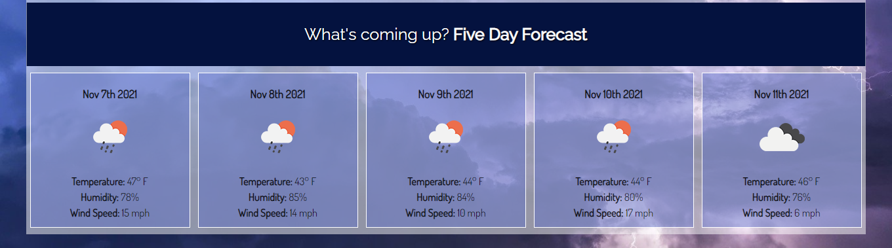

Weather App
Project Report
Languages Used
HTMLCSS
JS
With Help From...
JqueryMaterialize CSS
OpenWeatherApp API
Project Description
This is a weather dashboard where the user can search for a city and be provided with a report of weather data. They will receive the forecast for the current weather conditions and a 5-day forecast representing future weather conditions. Their searched city will be added to their search history list. If the user needs to toggle back to a previously searched city, they can click the city from their search history to re-display that data. To clear our their search history, the "clear search history" button can be clicked.Project Thoughts
Screenshots of Live Deloyment

